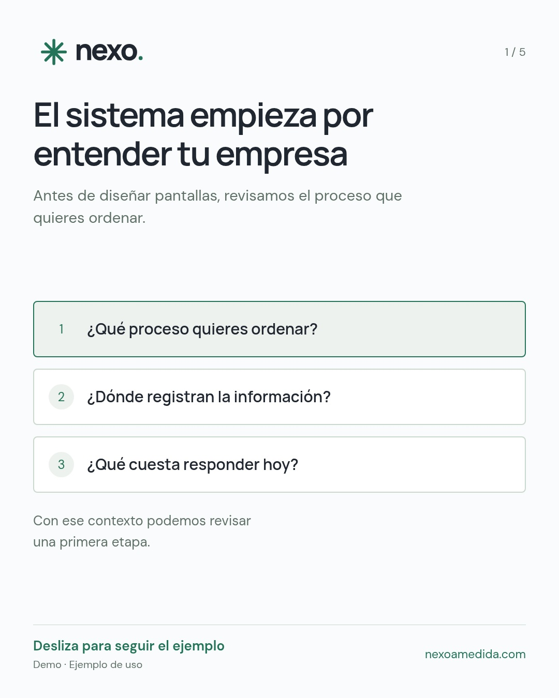

Así empieza un sistema hecho para tu empresa
Carrusel · 5 láminas · Facebook + Instagram
OrgánicoExplicar el proceso y reducir incertidumbre.
Ver piezas, descargar y copiar textos
Sube las cinco láminas 4:5 en orden para el carrusel orgánico. Revisa el recorte de la ubicación antes de publicar.


Texto alternativo sugerido
Pieza de Nexo: Así empieza un sistema hecho para tu empresa. Pensar que implementar un sistema exige cambiarlo todo de golpe. Ejemplo ilustrativo con datos de demostración.
CTA: Guárdalo como referencia para tu primera implementación.